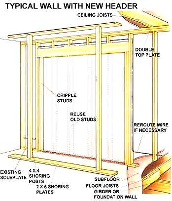
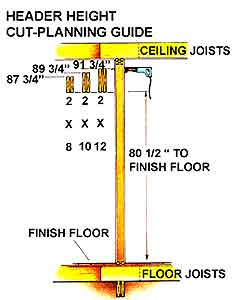
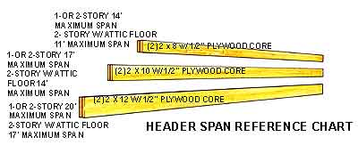
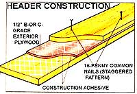

How to expand your living space using subtraction, not addition.
Walls might be unwanted for any one of several reasons. For one owner, a room, hallway or closet might comfortably be sacrificed in the quest for an open floor plan. For another, an existing doorway could easily give way to a full-fledged entrance. And should the search for space go beyond the house into a finished garage or porch, a wall will have to be opened somewhere to provide access.
If the thought sounds intimidating, that's probably because it should be. Most walls are significant to a home's structural integrity, and removing one without providing an appropriate substitute is a standing invitation to worry. Fortunately, there are standard methods for safely spanning just about any opening, and most involve nothing more than a willingness to understand basic framing carpentry.
WALLS
The idea should be a little intimidating.
The Way of the Wall
For our purposes, walls come in two varieties: bearing and nonbearing. The first, and most important, transfer live loads (the weight of people, furniture and snow) and dead loads (the weight of a building's construction materials) vertically downward to the structure's foundation and footings. The second type is merely a partition that supports no load other than its own weight. Nonbearing walls are of little significance if your home is structurally sound.
Typically, a bearing wall looks like the "before" version of our main illustration. At the base, it's supported by rows of horizontal floor joists running at right angles to its length. Those joists in turn rest on either a girder or a masonry foundation wall. The upper surface of the joists is covered with plank or plywood subflooring, and the wall rests upon that. It consists of a single soleplate, a series of vertical studs placed 16" on center (24" for 2 X 6s) and a double top plate. The joists for the second floor or ceiling above are nailed to the top plate over each stud.
Before thinking about actually removing a wall, it's essential that you assess the structure's framing. Get your hands on some old clothes and a 25' locking tape measure, and begin your inspection in the basement or crawlspace. Determine and record the location of interior foundation walls, or the equivalent girders and supporting piers or posts. It's likely that the pattern for the basement is duplicated in the stories above. To be sure, measure the position of the first-floor walls, and compare that of the second-floor walls as well.
If you simply have attic storage above the first floor, look for a central girder (doubled two-bys with joists extending from both sides at a perpendicular) and establish whether it's supported only at its ends or from beneath its midpoint too. Generally, a beam longer than a dozen feet or so needs some help from below. Should your attic space be a trussed system (easily identified by a V or W pattern of boards connecting the joists and roof rafters), it's most likely supported by two outside walls and doesn't bear on any interior partitions.
Walls vertically in line with each other and a foundation member can be assumed to support weight, but even walls parallel to and within 5' or 6' of them may share that load. Another clue to the presence of a bearing wall is that the joists above it are too small or spaced too far apart to span any distance without support. Nonbearing walls, on the other hand, often run parallel to joists, and though they may not meet code-sometimes have studs spaced at distances greater than 16" on center.
WALLS
When in doubt, consult an engineer
Ultimately, any appraisal on your part should consider the requirements of your local residential building code, both as a clue to how the structure may have been put together and as a guide to how it should be modified. The code handbook (available through your county building inspector) outlines approved techniques and specifies span and load limits, among other things. If unanswered questions persist, or if you're not quite ready to remove wall sheathing to get a better look at what you're up against, consult a structural engineer. His or her opinion will be well worth the small investment, particularly if you're considering a span greater than 12' or if multiple stories are involved.
Unshrouding the Mystery
You've studied your particular situation thoroughly, and you're certain that the section of wall you want to remove is carrying the weight of the floor above. To take care of that load, you'll need to replace the wall with a header, or lintel, that itself is held up at its ends on posts. It's nothing more than a sturdy beam-usually deeper than it is thick-which allows a clear span across an opening.
Headers can be complicated trusses or expensive steel I-beams, but for most purposes, two appropriately sized pieces of dimension lumber fastened around a core layer of 1/2" plywood will be perfectly adequate.
An engineer would rely upon a formidable round of calculations to determine the proper size of a header, but to save you that trouble we've worked up a reference chart which simplifies matters immensely. It takes into account the allowable loads for the three most common sizes of lumber headers and states their length limits, based upon whether the house has one or two stories, or two stories with full attic storage or a third floor.
Clearly, you're not going to know exactly how long to make the header until you've stripped away the wall's finish surface and can see the internal framing. In preparation for this, you'll need some standard carpentry tools (including a framing hammer, a tape measure, butt and cold chisels, a utility knife, a flat pry bar, a level, pliers with side cutters, a dry-wall saw and a drill with extension bits) and a few heavier implements such as a circular saw, a wrecking bar and a hand sledge. You'll also want an inexpensive circuit tester, safety glasses, a dust mask, at least a few 4" clamps and (you can rent this) a reciprocating saw with wood- and metal-cutting blades.
You can try to keep the mess to a minimum, but that will probably be an exercise doomed to failure. Just use a drop cloth if you have one, and keep the sharp edges of tools off the floor . . . you'll appreciate your foresight when the job's done. Begin at the breaker box by shutting off power to all the receptacles in the wall you're working on, then double-checking them with the circuit tester. Chances are you won't be removing a wall with plumbing in it, but turn the water supply off and plan to work slowly on your first saw cut just in case. Using the flat bar, carefully remove and save the ceiling and baseboard trim and any other molding around doors, etc.
Next, mark off in pencil the rough area you plan to do away with. Because wall studs are usually placed 16" apart, it's best to measure inward from the corners in multiples of that distance so you'll know where to terminate the opening. Nailhead dimples or cracked plaster seams are even better indicators of stud location if you can spot them. On the other hand, it may be easier to simply remove all the wall sheathing and replace it as needed later. The material costs involved won't be that much greater, and this method gives you the advantage of not having to struggle to spare something that may get damaged anyway.
Start at a point near the top of the wall and drill an exploratory hole into the wall cavi ty, then use your saw to cut halfway down through the sheathing. Repeat this process 9" or so to the inside of your first cut, then slice horizontally through the top and bottom points so you can remove a rectangular wall section. Don't try to cut through both sides of the wall at once; all you're after is an access from which you can get a clear view to the soleplate inside the wall. In older buildings, you may encounter fire stops-wooden blocking nailed more or less horizontally between studs. If that's the case, cut into the wall again just below the blocks, but don't go all the way to the floor . . . just remove enough material to get a peek at what's inside.
Your caution is to prevent you from cutting through the unknown wire. But once you can see to unsheathe a stud cavity safely from ceiling to floor, you'll be aware of any horizontal wiring and will only have to be careful of cable coming up through the soleplate, which most likely will terminate at a nearby receptacle. At this point, you can use your utility knife to slice through any seam or fill that might inhibit a clean separation at the joint between the wall and ceiling. Continue removing the wallboard with care until you've reached your marked limits, then strip the wall from the opposite side. (The job will be easier if you drill through the back of the sheathing at the corners so you can pencil an accurate cut line.) With the framing exposed, you're ready to prepare the header.
Visible Means of Support
Since the wall studs are already in place, it's simplest to choose two of them to define where the header will terminate. Each lintel end must bear upon at least 3 1/2" of support surface, so it's quite convenient to double up some of the 2 X 4s you're removing and fasten them to the flanking studs to serve as posts. One caution: With some types of construction, the posts may not rest directly over a joist, so you'll have to plan on shifting them slightly to one side so they will. If that's impractical, you'll have to block the space between the floor joists from below, thus using the girder beneath the joists for support.
WALLS
Put space where you want it.
Once you know how long to make the header, purchase the straightest No. 1 grade structural lumber you can find, as well as a sheet of 1/2" B- or C-grade exterior plywood. Cut the plywood core to match the depth of your two-bys, locating the butt joint nearer one end if the lintel is over 8' in length. Apply a crosshatch pattern of construction adhesive to all mating surfaces, then clamp the boards around the plywood. Finish the job by nailing the assembly together from both sides with 16d common nails.
At this point, you'll need to determine how best to shore up the ceiling while you work on cutting out the wall studs. For the sake of convenience, it's easiest to shore just one side of the wall, and for single- or two-story homes, that will probably suffice. However, if there are two floors above the one you're working on, or if the joists of the floor above the wall aren't nailed together where they overlap (or if they're not fastened to the wall's top plate at all), you'll have to shore the ceiling about 2' from both sides of the wall-and remember that you'll need room to get the header in place somehow.
The shoring framework can be made from 4 X 4 posts with 2 X 6 or greater plates across the top and bottom. Though the strength of the shoring depends on the weight above, a post every 4' or 5' should be more than sufficient, and you can always bolster the frame with internal 2 X 4 studs or a diagonal brace nailed between the corners. Ideally, you should be able to use your shoring frame as a "kicker," building it slightly taller than the ceiling is high so it can be driven into place from the floor, raising the joists above just enough to set the header correctly.
A strip of carpet placed underneath the lower shoring plate will ease this procedure. Should you have to use small hydraulic or screw jacks to place the shoring, set them on 2'-long 4 X 4 pads positioned over adjoining floor joists, then use 4 X 4s with short top plates as jacking posts. Make certain they're perfectly plumb before you apply any pressure, and don't raise the ceiling more than 3/4" over level unless you bolster the floor from below. Temporary supports have a way of walking sideways under pressure, so check their position often.
The Last Stand
There are a number of ways to install a header, and each has its own merit. The dictates of your building code may set the precedent, but if there's no specific guidance, plan on placing longer lintels-say over 5' or so-directly against the wall's top plate, and shorter ones the established distance below the plate (see illustration), filling the gap with short 2 X 4 cripple studs. If you need to make up only an inch or so, trim out the header at the bottom with scrap wood.
Begin by cutting the existing studs at the center, then prying each end free. If you want to reuse the studs, cut them as close to the bottom as you can without hitting the toenails. Merely sledging the boards of the plate will splinter their ends and make them unusable.
Once the uprights are out, use a circular saw set at a 1 1/2" depth to cut through the soleplate exactly 3" in from each standing flank stud. Pry the soleplate off the floor with a wrecking bar, then cut or remove any exposed nails from the top plate. After double checking the correct length of the stud support posts, fasten the outside set to the flank studs with 16d nails, and the inside set to those you just installed, making sure the posts are plumb all around and the lower ends are toenailed into the sole plate.
Before placing the header, remeasure the total span distance and trim the beam's length so there's a fraction of an inch of free play at one end for fitting. If there's any notching or edge-shaving to be done, now's the time to do it. Then, with the help of a couple of friends, lift the header to the posts, position it, and nail it to both the flank studs and the supports below. If you're using cripple studs, cut them to length (don't forget that your ceiling is probably a bit higher than it should be), and nail them between the top plate and the header at 16" on center. Otherwise, nail the header to the plate to keep it from migrating. Should you need to reroute a wire, it can pass through 5/8" holes in the cripples or run below the floor joists in the basement. Don't try to squeeze it between the planks of the lintel, or it may get damaged.
Buttoning Up
With everything securely in place, you can gradually remove the shoring and allow the house to settle comfortably on its new framing. Because it's wise to give the members a few days to stabilize to their environment, you can use the time to patch the floor where the soleplate was. Since the plate was probably set on the subflooring, you may only have to match the existing underlayment beneath carpeting or vinyl and piece in the appropriate surface patches. Wood flooring repair is more complicated, but it also is a matter of mating pieces to the original flooring and achieving the same finish height.
Covering the header framing is actually somewhat simpler. Because the lintel is the same thickness as the original wall frame, it shouldn't be difficult to cut sections of standard wallboard to fit against the undamaged sheathing. Trim the edges of the old board if you hadn't already, then fasten the newly trimmed patches in place around the posts and header with dry-wall nails. Tape and fill the seams, patch the nail dimples, and paint or cover the surface to match the other walls.
It's probably naive to assume that every wall remodeling job will proceed as smoothly as the one described here. But if you keep in mind that more than half the work is in planning what to do, doing it right should follow naturally.
|
 Note: The information given is based on a residential structure no longer than 32', subjected to wind velocities no higher than 50 mph, and roof snow accumulations no deeper than 8"". Consult a structural engineer for conditions outside these limits. |
 |
 |
|
 |
|
|